|
I’m a NOMIS Foundation Fellow at Columbia University at the Italian Academy for Advanced Studies, and an affiliate of Niko Kriegeskorte’s Visual Inference Lab at the Zuckerman Mind Brain Behavior Institute. My work focuses on: 1. Developing a New Theory of Visual Experience 2. Illustrating its Significance through Five New Visual Illusions, 3. Linking this Theory to Early Visual Processing in the Brain, and 4. Using this Theory to Develop Computational Models of Vision. |
|
I am also leading a Generative Adversarial Collaboration on the Primary Visual Cortex (V1) and was the lead organizer of a Royal Society Scientific Meeting and Volume on New Approaches to 3D Vision. |
| 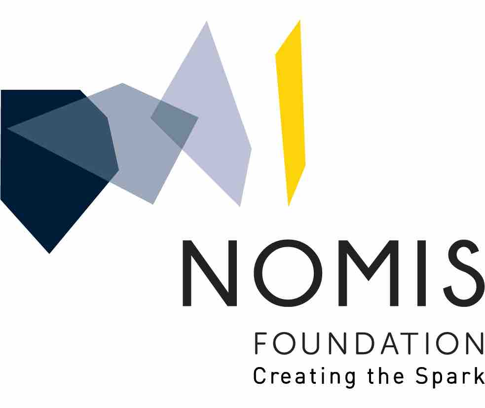 | I’m extremely grateful to the NOMIS Foundation for supporting my work, as well as the Presidential Scholars in Society and Neuroscience and the Italian Academy for Advanced Studies at Columbia University. |
| 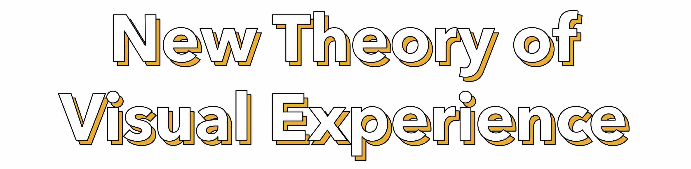 |
| In my book The Perception and Cognition of Visual Space (Palgrave, 2017), and in two articles, I develop a new low-level theory of visual experience: |
| 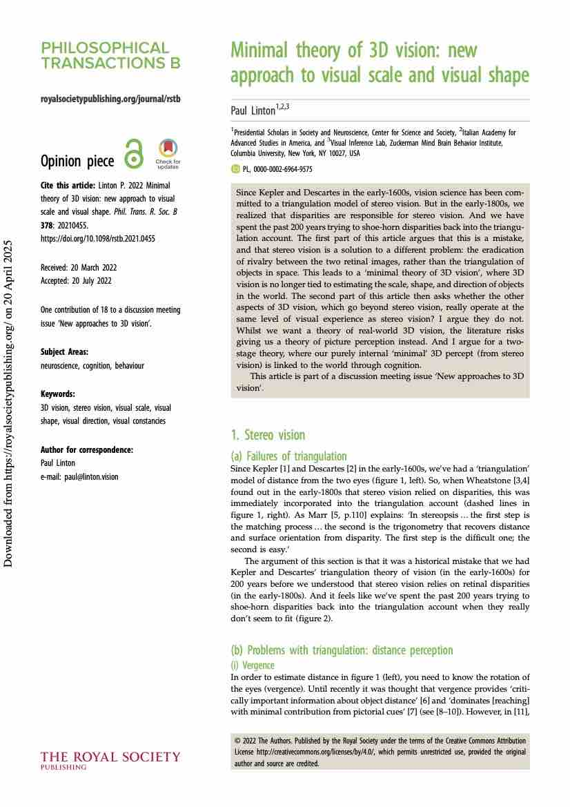 |
Linton, P. (2023). Minimal Theory of 3D Vision: New Approach to Visual Scale and Visual Shape. Philosophical Transactions of the Royal Society B
This paper argues that 3D Visual Shape is not attempting to estimate 3D geometry of the environment, but merely reflects the un-corrected “retinal disparities”. It goes on to argue that Visual Scale uses these imperfections in 3D Visual Shape to estimate size and distance. |
| 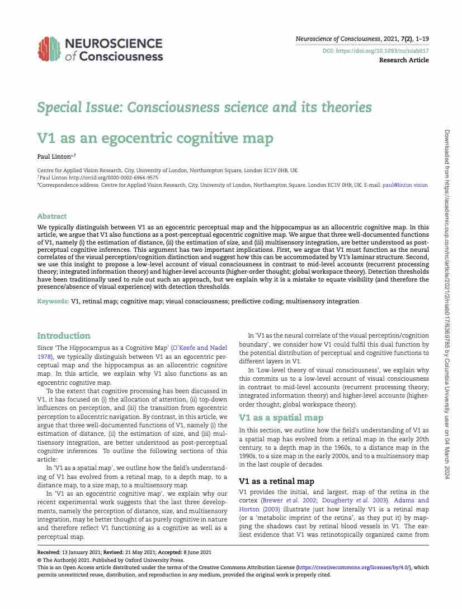 |
Linton, P. (2021). V1 as an Egocentric Cognitive Map. Neuroscience of Consciousness
This paper argues that the Primary Visual Cortex (V1) acts as the neural basis for the Perception/Cognition distinction, exploring the different roles of layers in V1. Now part of the basis for a Generative Adversarial Collaboration on V1. |
| 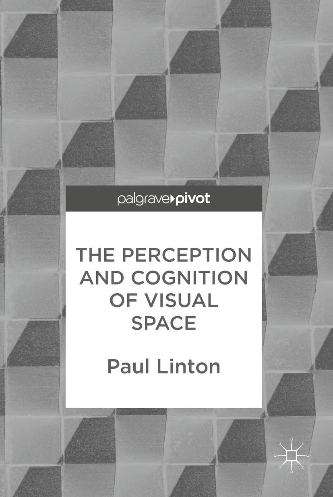 |
Linton, P. (2017).The Perception and Cognition of Visual Space (Palgrave Macmillan), 162 pages.
Sole authored book arguing for a two stage theory of 3D vision, according to which depth from stereo vision is extracted first (at level of Perception), before cue-integration and visual scale are processed (at level of Cognition). Email me for a copy for research purposes. |
| 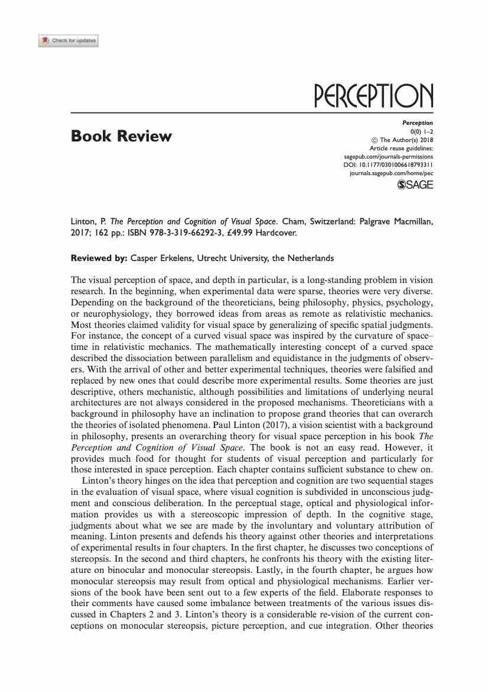 |
Erkelens, C. (2018). Review of Linton, P. The Perception and Cognition of Visual Space (2017), Perception
Review of my book by Prof. Casper Erkelens in Perception: “Paul Linton (2017) … presents an overarching theory for visual space perception in his book The Perception and Cognition of Visual Space. … it provides much food for thought for students of visual perception…” |
| 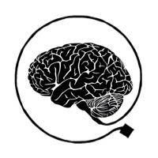 |
Linton, P. (2018). Brains Blog
My book was featured on the Brains Blog, the leading online forum for cognitive science:
1. Visual Space and the Perception / Cognition Divide 2. Perceptual Integration and Visual Illusions 3. Seeing Depth with One Eye and Pictorial Space |
| 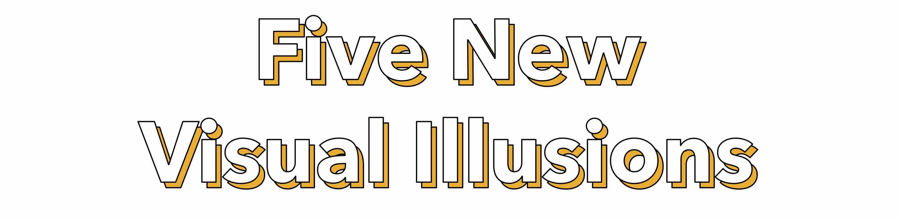 |
|
Inspired by my theoretical work, I developed five new visual illusions that suggest that visual experience is much simpler than we previously thought. |
| EUROPEAN CONFERENCE ON VISUAL PERCEPTION (ECVP) (2025) |
| COGNITIVE COMPUTATIONAL NEUROSCIENCE (CCN) (2025) |
| 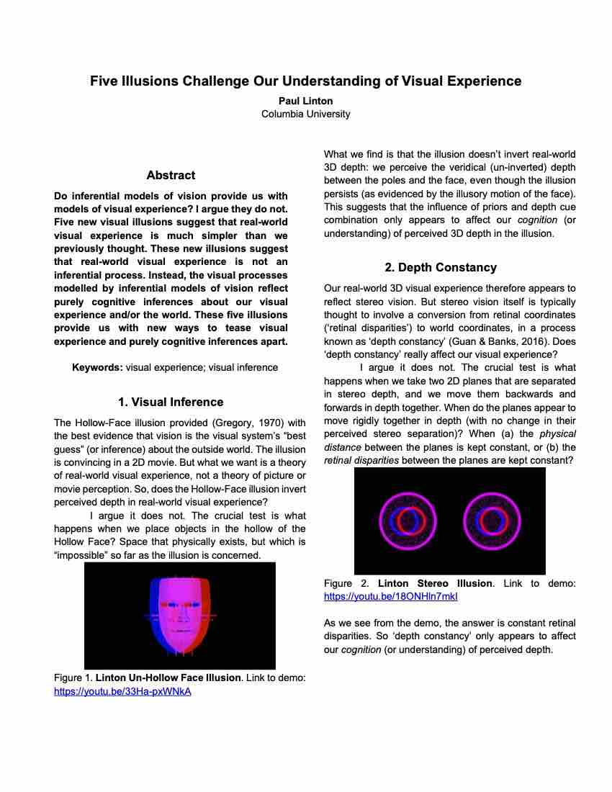 |
Linton, P. (2025). Five Illusions Challenge Our Understanding of Visual Experience. Cognitive Computational Neuroscience 2025 Meeting Extended Abstract
Outlines five new visual illusions - covering 1. Visual Inference, 2. Visual Shape, 3. Visual Scale, 4. Size Constancy, and 5. Color Constancy - arguing that visual experience is much simpler than we previously thought. |
| VISION SCIENCES SOCIETY (VSS) (2025) |
|
“Experiential3D: Four Illusions Challenge Our Understanding of 3D Visual Experience”, Vision Sciences Society (2025) [Poster] [Abstract] |
|
“Five Illusions Challenge Our Understanding of Visual Experience”
|

| 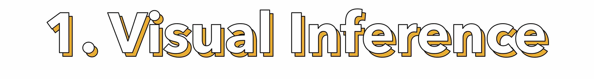 |
|
In the Hollow Face Illusion, a mask pointing away from us looks like it is pointing towards us, leading to illusory (false) perception of its motion. This is taken as evidence that visual experience is the visual system’s “best guess” (or “inference”) about the world given its prior knowledge about the world.
However, using two illusions I question whether our visual experience in the real world is really affected by the Hollow Face Illusion: |

| LINTON UN-HOLLOW FACE ILLUSION |
|
I show that if you place rods in the hollow of the Hollow Face Illusion - space that physically exists, but which is “impossible” according to the illusion - the illusion still persists (as evidenced by illusory motion), but you are able to see the true (non-inverted) stereo depth between the rods and the face.
|

|
Kriegeskorte Lab experiencing the Un-Hollow Face Illusion. 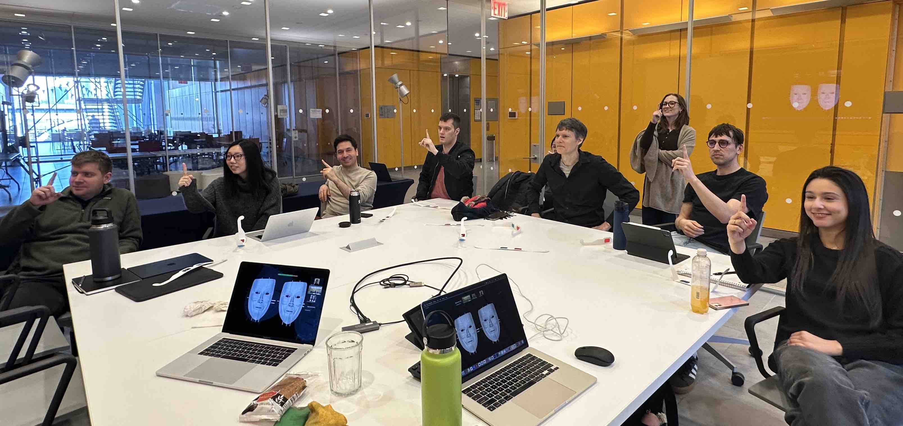 |
| LINTON MORPHING FACE ILLUSION |
|
I show that if you add balls to the tip of the nose and the cheek, and morph back and forth from a receding to a protruding mask, the change in the ordinal depth of the balls (inverting back and forth) is apparent. |
| FURTHER READING |
| Linton, P. (2024). Depth Cue Integration is Cognitive Rather than Perceptual: Linton Un-Hollow Face Illusion and Linton Morphing Face Illusion. Applied Vision Association Christmas Meeting. |
|
The same physical distance produces different retinal disparities depending on whether it is near (blue) or far (red). This leads to the assumption that there is a mechanism (“depth constancy”) that compensates for the change in disparities with viewing distance, so we see a roughly constant separation in depth.
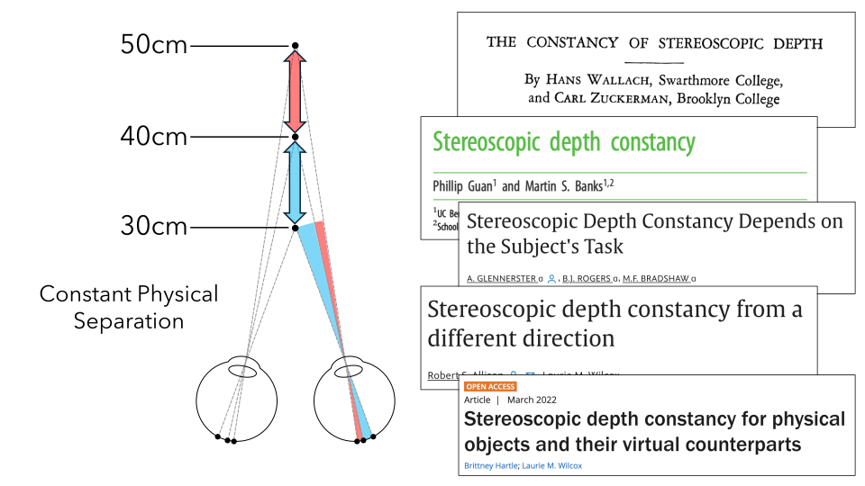 However, I argue there is no such “depth constancy” mechanism. |
| LINTON STEREO ILLUSION |
|
The question is when do two circles (a large back cirlce and a small front circle) appear to move rigidly together in depth (when their angular size controlled)? When the physical separation between the circles is kept constant (left) or when the retinal disparities between the circles are kept constant (right): 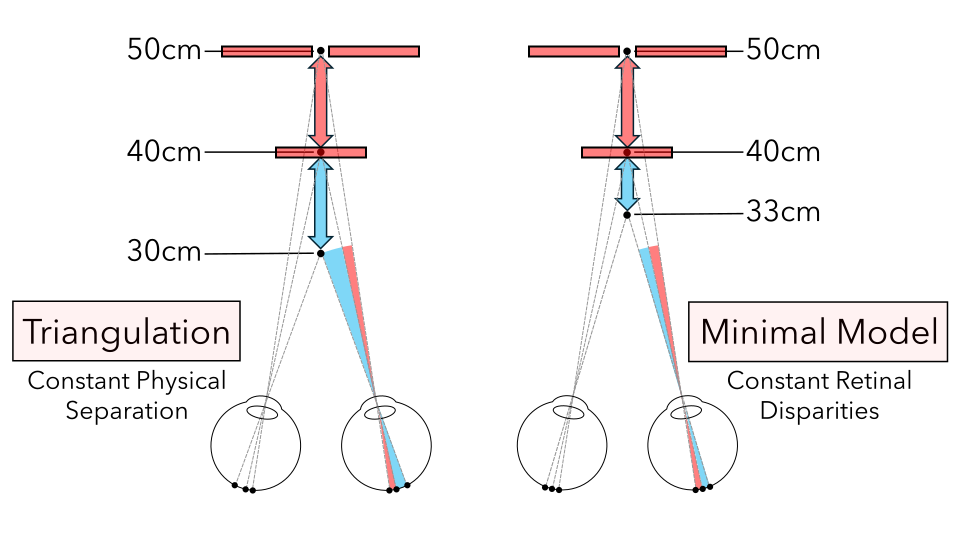 When we keep the physical distance between the circles constant, the circles don’t look as if the separation between them is constant, but instead changes: 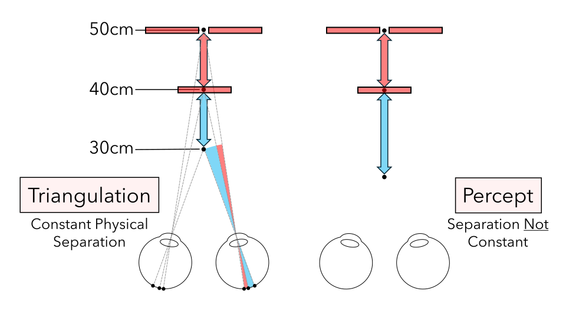 Whilst when we keep the disparities fixed, the circles appear to move rigidly together, even though the are actually physically compressing: 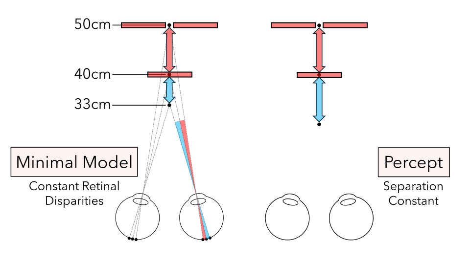 You can try the Linton Stereo Illusion for yourself with a pair of red-blue glasses: With this version specifically optimized for red-blue glasses: |
|
Originally presented at the Vision Sciences Society (VSS)(2024) Demo Night and European Conference on Visual Perception (ECVP)(2024) Demo Night.
|

| FURTHER READING |
| 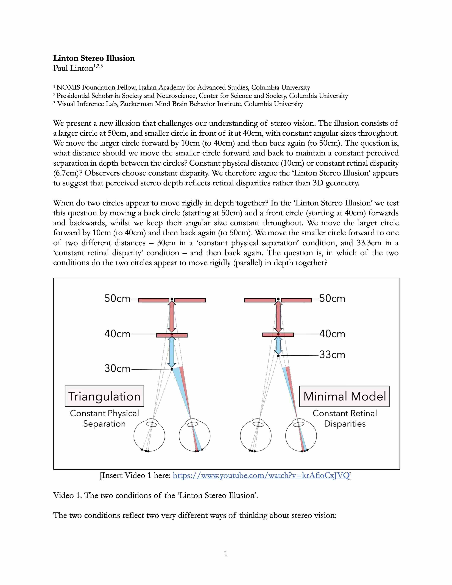 |
Linton, P. (2024). Linton Stereo Illusion. Under Review
Explains the Linton Stereo Illusion and justifies it as a valid test for stereo vision in general, not just in the laboratory.
|
| 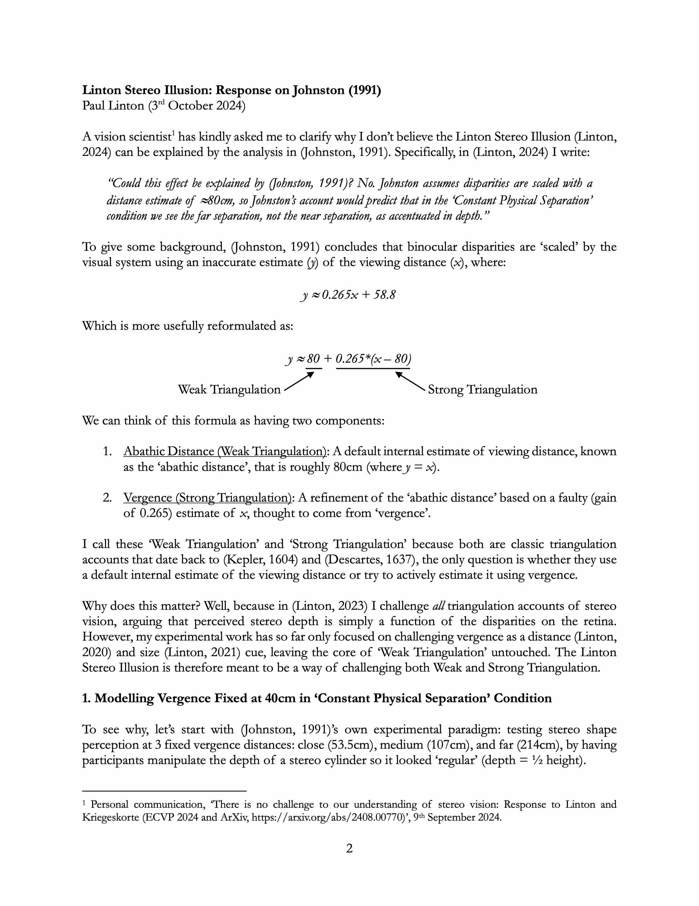 |
Linton, P. (2024). Linton Stereo Illusion: Response on Johnston (1991). ArXiv
Explains why previous accounts of the failures of depth constancy should predict the opposite distortions from the ones found in the Linton Stereo Illusion. |
|
Stereo vision plays a key role in size and distance perception. It’s thought to be an effect of “vergence” (eye rotation), since the closer the object, the more the eyes have to rotate to fixate on it. However, in Linton (2020) and Linton (2021), I show that vergence provides no useful size or distance information. 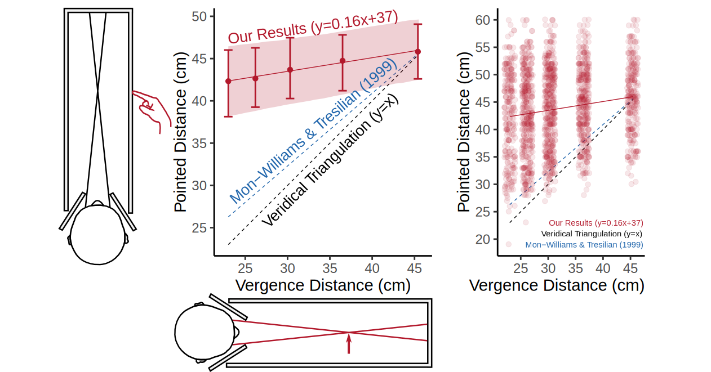 Instead, I argue for an account grounded in a purely cognitive association between accentuated stereo 3D shape (from horizontal disparities) and closer distances given horizontal disparities fall off with distance squared. |
| LINTON SCALE ILLUSION |
|
To test this, I combine the horizontal disparities associated with normal viewing with the vergence and vertical disparities associated with near viewing. 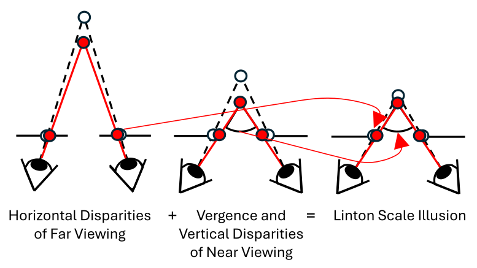 And the illusion alternates between this condition and near viewing. And what we find is that this new condition looks “Normal” not “Small”, indicating that what is driving the miniaturisation effect in near viewing really are horizontal disparities (the only difference between the two conditions).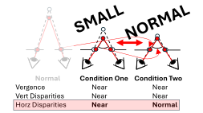 Switching between the two conditions we see a startling effect: the “scale” of the scene changes, even though all that has changed is the geometry of the scene, not the apparent distance of the scene itself. |
| VR DEMO |
|
LINK TO DEMO - suitable for PC VR and Oculus Quest 3 with PC Link.
Originally presented at the Vision Sciences Society (VSS)(2025) Demo Night and European Conference on Visual Perception (ECVP)(2025) Demo Night, this VR demo alternates between the two conditions. 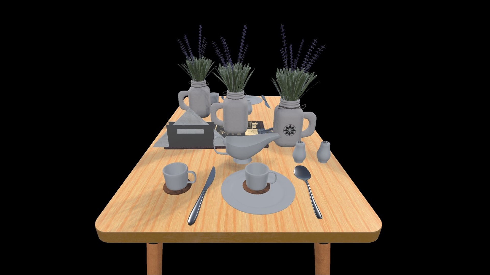 |
| FURTHER READING |
| 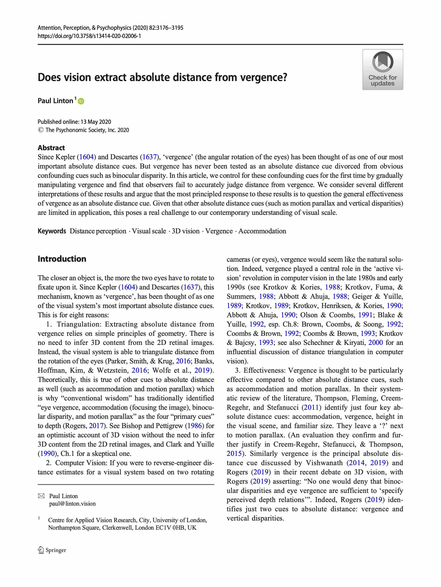 |
Linton, P. (2020). Does Vision Extract Absolute Distance from Vergence? Attention, Perception, and Psychophysics, 82, 3176-95.
Demonstrates that vergence (eye rotation) and accommodation (eye focus) are both poor cues to distance. Featured on its own Psychonomic Society podcast Knocking a Longstanding Theory of Distance Perception.
|
| 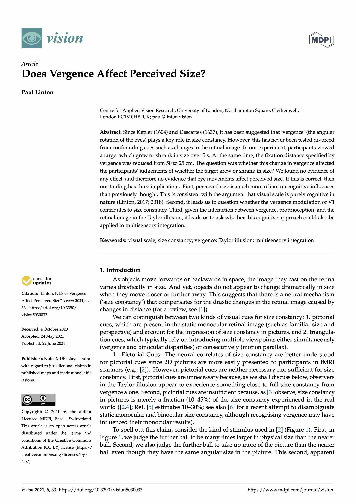 |
Linton, P. (2021). Does Vergence Affect Perceived Size? Vision, 5(3), 33.
Demonstrates that vergence (eye rotation) has no effect on perceived size. Part of Special Issue on Size Constancy for Perception and Action edited by Mel Goodale and Robert Whitwell. |
| 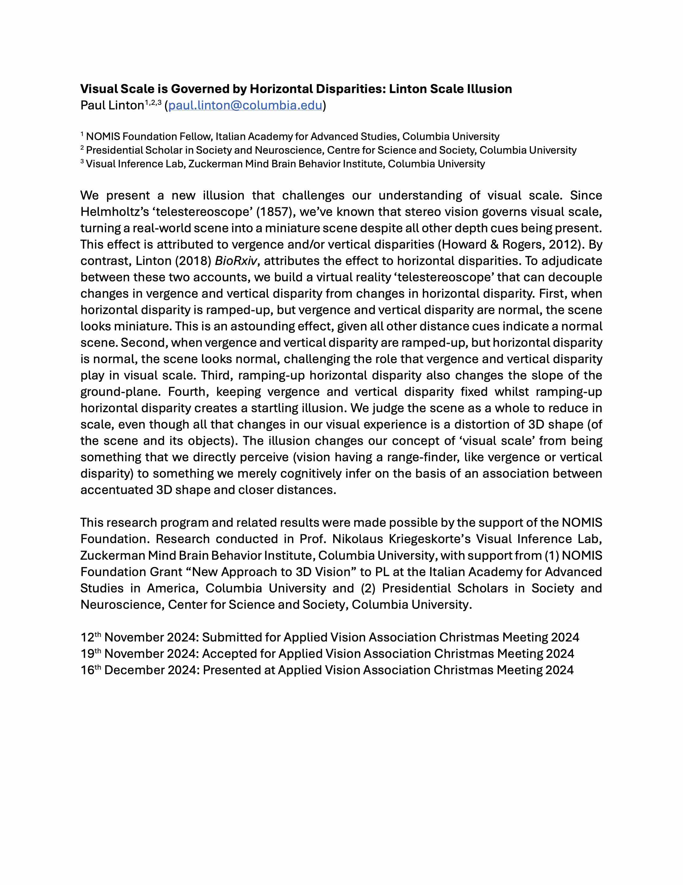 | Linton, P. (2024). Visual Scale is Governed by Horizontal Disparities: Linton Scale Illusion. Applied Vision Association Christmas Meeting. |
| 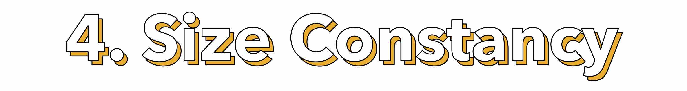 |
|
The cars are the same size on your retina, and yet you “see” the far car as bigger (taking up more of the image) than the near car, due to Size Constancy.
|
| 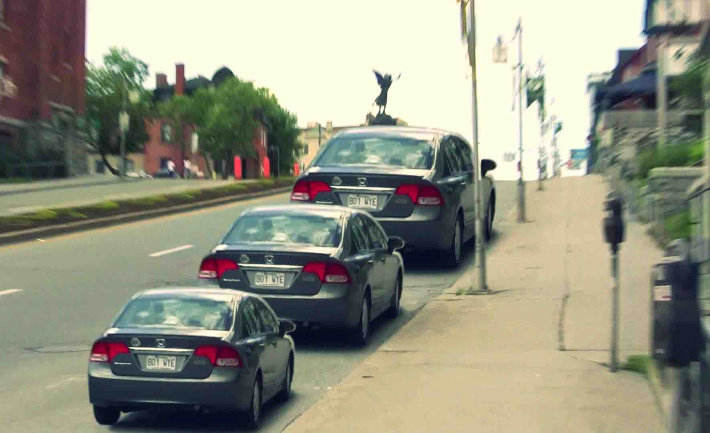 |
| © Alex Blouin / Reddit |
| LINTON SIZE CONSTANCY ILLUSION |
|
If size constancy really distorted our perception of the image, then everythinng in the same region of the image would have to be equally distorted. But that is not what we find. When we add 2D frames to the cars, the cars remain distorted, and yet the frames themselves are either not (or only minimally) distorted. |
| 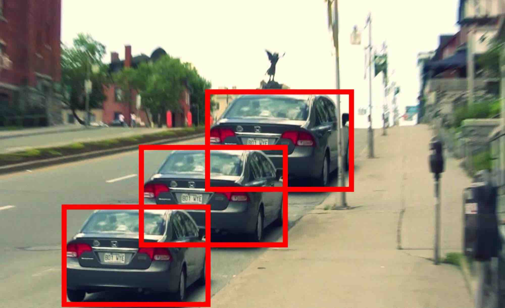 |
| FURTHER READING |
| 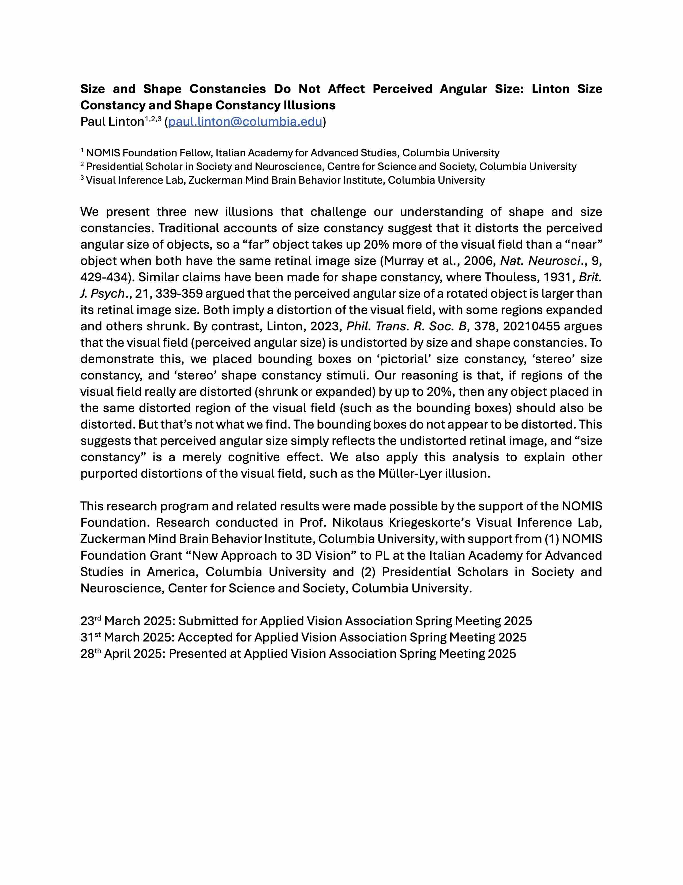 | Linton, P. (2025). Size and Shape Constancies Do Not Affect Perceived Angular Size: Linton Size Constancy and Shape Constancy Illusions. Applied Vision Association Spring Meeting. |
|
Color constancy is thought to affect the percieved color of objects, so that the disk in this illusion by Akiyoshi Kitaoka (based on Anderson & Winawer, 2005) is perceived differently as yellow or blue:
|
| 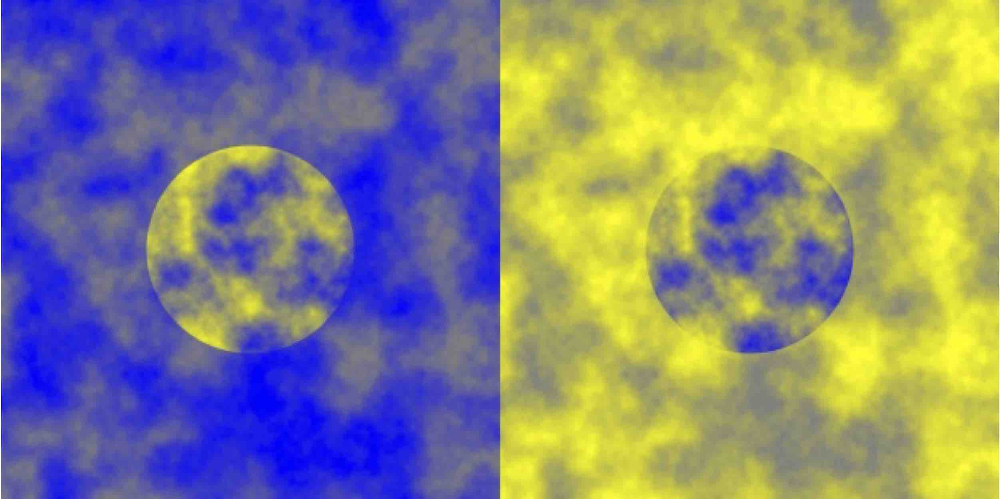 |
| © Akiyoshi Kitaoka |
| However, I argue that color constancy does not affect perceptual appearance. |
| LINTON COLOR CONSTANCY ILLUSION |
|
If the above color constancy illusion really affects our visual experience, then as we alternate between the two versions of the illusion we should see a “phenomenal flicker” as the stimulus changes from “yellow” to “blue”. By contrast, I show that that as we alternate between the two versions of the illusion, the appearance of the disk doesn’t change, and yet we can still say when it is changing between “yellow” and “blue”. |
| FURTHER READING |
| 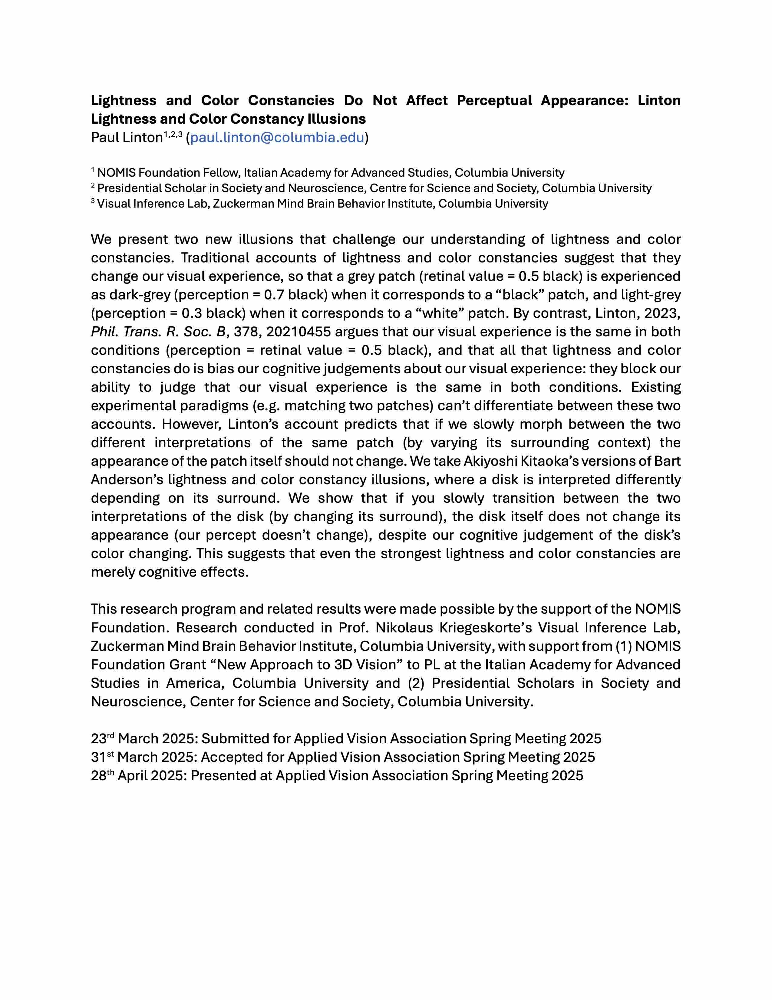 | Linton, P. (2025). Lightness and Color Constancies Do Not Affect Perceptual Appearance: Linton Lightness and Color Constancy Illusions. Applied Vision Association Spring Meeting. |
| © 2025 Paul Linton |